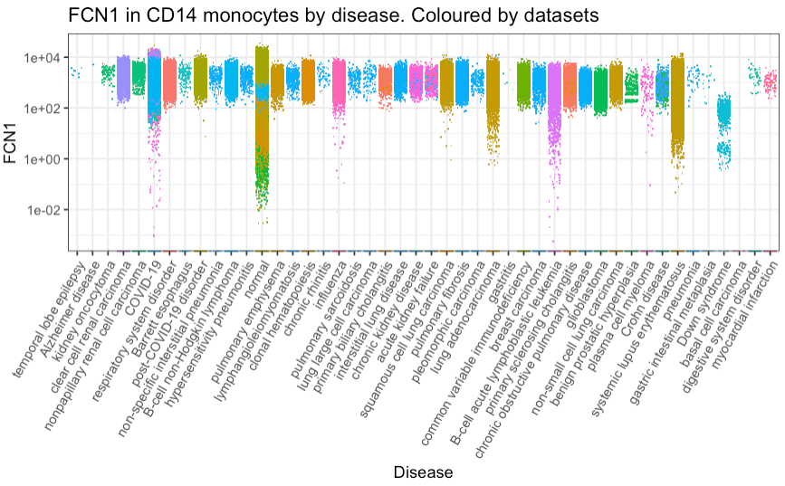
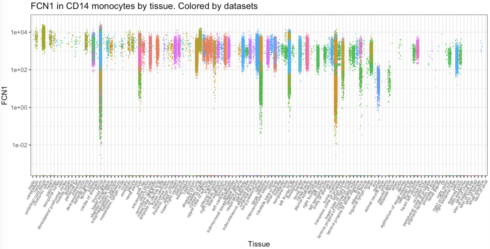

Introduction
cellNexus builds upon and extends the functionality of the previously released CuratedAtlasQueryR, providing a unified query and access interface to the harmonised, curated, and reannotated CELLxGENE human cell atlas. It enables reproducible and programmatic exploration of large-scale single-cell data resources, supporting retrieval at the cell, sample, and dataset levels through flexible filtering by tissue, cell type, experimental condition, or other metadata features. The retrieved data are returned for downstream analysis.
cellNexus integrates over 40 million human cells processed with standardised quality control, consistent normalisation, and unified abundance representations—including single-cell, counts-per-million, pseudobulk, and metacell layers. This harmonised design facilitates efficient cross-dataset analyses and downstream integration.
Data are hosted on the ARDC Nectar Research Cloud, and most cellNexus functions interact with Nectar via web requests, so a network connection is required for most functionality.
cellNexus and CuratedAtlasQueryR both rely on pre-computed expression layers, but they differ in how these layers were generated. cellNexus applies a more standardised workflow with explicit empty droplet and dead cell removal followed by harmonised QC, normalisation, and multi-layer data generation. In doing so, it produces newly iterated data that align with the evolving CELLxGENE releases.

Query interface
Installation
devtools::install_github("MangiolaLaboratory/cellNexus")Load and explore the metadata
Load the metadata
metadata <- get_metadata(cloud_metadata = METADATA_URL)
metadata#> ℹ Downloading 1 file, totalling 0 GB
#> ℹ Downloading https://object-store.rc.nectar.org.au/v1/AUTH_06d6e008e3e642da99d806ba3ea629c5/cellNexus-metadata/sample_metadata.1.3.0.parquet to /tmp/RtmpVDjbPV/sample_metadata.1.3.0.parquet
#> # Source: SQL [?? x 97]
#> # Database: DuckDB 1.4.3 [unknown@Linux 5.14.0-362.24.1.el9_3.x86_64:R 4.5.2/:memory:]
#> cell_id dataset_id observation_joinid sample_id cell_type cell_type_ontology_t…¹ sample_ assay
#> <chr> <chr> <chr> <chr> <chr> <chr> <chr> <chr>
#> 1 FCAImmP7528294-ACATA… cda2c8cd-… p5e=WoIq0d 034f0fb1… monocyte CL:0000576 034f0f… 10x …
#> 2 FCAImmP7528294-CATGA… cda2c8cd-… lx`7Bo-&7n 034f0fb1… monocyte CL:0000576 034f0f… 10x …
#> 3 FCAImmP7528294-AAGAC… cda2c8cd-… *NUPW@J{c2 034f0fb1… monocyte CL:0000576 034f0f… 10x …
#> 4 FCAImmP7528294-AATCG… cda2c8cd-… KIV>qGFIS? 034f0fb1… monocyte CL:0000576 034f0f… 10x …
#> 5 FCAImmP7528294-TTTGG… cda2c8cd-… *_#lQ<oUnT 034f0fb1… monocyte CL:0000576 034f0f… 10x …
#> 6 FCAImmP7528294-TCAGG… cda2c8cd-… zHCZWNmUHu 034f0fb1… monocyte CL:0000576 034f0f… 10x …
#> 7 FCAImmP7528294-GACGC… cda2c8cd-… -NL-OH3!IA 034f0fb1… monocyte CL:0000576 034f0f… 10x …
#> 8 FCAImmP7528294-CTTGG… cda2c8cd-… 6mRCZW}rOM 034f0fb1… monocyte CL:0000576 034f0f… 10x …
#> 9 FCAImmP7528294-CACTC… cda2c8cd-… I6>u{Gb-J_ 034f0fb1… monocyte CL:0000576 034f0f… 10x …
#> 10 FCAImmP7579218-TGTGG… cda2c8cd-… IdHwp1GBZm 03ddfd57… monocyte CL:0000576 03ddfd… 10x …
#> # ℹ more rows
#> # ℹ abbreviated name: ¹cell_type_ontology_term_id
#> # ℹ 89 more variables: assay_ontology_term_id <chr>, cell_count <int>, citation <chr>, collection_id <chr>,
#> # dataset_version_id <chr>, default_embedding <chr>, development_stage <chr>,
#> # development_stage_ontology_term_id <chr>, disease <chr>, disease_ontology_term_id <chr>, donor_id <chr>,
#> # experiment___ <chr>, explorer_url <chr>, feature_count <int>, filesize <dbl>, filetype <chr>,
#> # is_primary_data <chr>, mean_genes_per_cell <dbl>, organism <chr>, organism_ontology_term_id <chr>, …Metadata is saved to get_default_cache_dir() unless a custom path is provided via the cache_directory argument. The metadata variable can then be re-used for all subsequent queries.
Explore the tissue
metadata |>
dplyr::distinct(tissue, cell_type_unified_ensemble)
#> # Source: SQL [?? x 2]
#> # Database: DuckDB 1.4.3 [unknown@Linux 5.14.0-362.24.1.el9_3.x86_64:R 4.5.2/:memory:]
#> tissue cell_type_unified_ensemble
#> <chr> <chr>
#> 1 thymus cd14 mono
#> 2 breast nk
#> 3 renal pelvis epithelial
#> 4 kidney epithelial
#> 5 kidney blood vessel epithelial
#> 6 lung parenchyma cd4 th2 em
#> 7 respiratory airway cd4 th2 em
#> 8 lung cd4 th1 em
#> 9 lung cd4 fh em
#> 10 nose cd4 fh em
#> # ℹ more rowsQuality control
cellNexus metadata applies standardised quality control to filter out empty droplets, dead or damaged cells, doublets, and samples with low gene counts.
metadata = metadata |>
dplyr::filter(empty_droplet == FALSE,
alive == TRUE,
scDblFinder.class != "doublet",
feature_count >= 5000)Download single-cell RNA sequencing counts
Query raw counts
single_cell_counts =
metadata |>
dplyr::filter(
self_reported_ethnicity == "African" &
assay |> stringr::str_like("%10x%") &
tissue == "lung parenchyma" &
cell_type |> stringr::str_like("%CD4%")
) |>
head() |>
get_single_cell_experiment()
single_cell_counts#> class: SingleCellExperiment
#> dim: 56239 6
#> metadata(0):
#> assays(1): counts
#> rownames(56239): ENSG00000121410 ENSG00000268895 ... ENSG00000135605 ENSG00000109501
#> rowData names(0):
#> colnames(6): LAP92_CATTCTAGTGCGGATA-1_duong___9f222629-9e39-47d0-b83f-e08d610c7479_1
#> LAP92_CTCATGCCACCTGATA-1_duong___9f222629-9e39-47d0-b83f-e08d610c7479_1 ...
#> GCTCCTAAGGGTATCG_F02607___9f222629-9e39-47d0-b83f-e08d610c7479_1
#> AACACGTCACGCATCG_F01853___9f222629-9e39-47d0-b83f-e08d610c7479_2
#> colData names(98): dataset_id observation_joinid ... dir_prefix original_cell_
#> reducedDimNames(0):
#> mainExpName: NULL
#> altExpNames(0):Query counts scaled per million
single_cell_cpm =
metadata |>
dplyr::filter(
self_reported_ethnicity == "African" &
assay |> stringr::str_like("%10x%") &
tissue == "lung parenchyma" &
cell_type |> stringr::str_like("%CD4%")
) |>
head() |>
get_single_cell_experiment(assays = "cpm")
single_cell_cpm#> class: SingleCellExperiment
#> dim: 56239 6
#> metadata(0):
#> assays(1): cpm
#> rownames(56239): ENSG00000121410 ENSG00000268895 ... ENSG00000135605 ENSG00000109501
#> rowData names(0):
#> colnames(6): LAP92_CATTCTAGTGCGGATA-1_duong___9f222629-9e39-47d0-b83f-e08d610c7479_1
#> LAP92_CTCATGCCACCTGATA-1_duong___9f222629-9e39-47d0-b83f-e08d610c7479_1 ...
#> GCTCCTAAGGGTATCG_F02607___9f222629-9e39-47d0-b83f-e08d610c7479_1
#> AACACGTCACGCATCG_F01853___9f222629-9e39-47d0-b83f-e08d610c7479_2
#> colData names(98): dataset_id observation_joinid ... dir_prefix original_cell_
#> reducedDimNames(0):
#> mainExpName: NULL
#> altExpNames(0):Query pseudobulk
pseudobulk_counts =
metadata |>
dplyr::filter(
self_reported_ethnicity == "African" &
assay |> stringr::str_like("%10x%") &
tissue == "lung parenchyma" &
cell_type |> stringr::str_like("%CD4%")
) |>
head() |>
get_pseudobulk()
pseudobulk_counts#> class: SingleCellExperiment
#> dim: 56239 3
#> metadata(0):
#> assays(1): counts
#> rownames(56239): ENSG00000000003 ENSG00000000005 ... ENSG00000290292 ENSG00000291237
#> rowData names(0):
#> colnames(3): a2459ad4272363e6eb775e8e99607c3e___cd4 th1 em
#> 9c8fa5a8d2ae37179b579a0217670512___LAP92_1_duong___cd4 th2 em
#> e4d7f8162faf68a85f61bdbd81dae627___cd4 th2 em
#> colData names(59): dataset_id sample_id ... dir_prefix sample_identifier
#> reducedDimNames(0):
#> mainExpName: NULL
#> altExpNames(0):Query metacell
The metadata includes a series of metacell aggregation levels, beginning with 2, 4, 8, and so on. For example, the value of metacell_2 represents a grouping of cells that can be split into two distinct metacells.
metacell_counts =
metadata |>
dplyr::filter(!is.na(metacell_2)) |>
dplyr::filter(
self_reported_ethnicity == "African" &
assay |> stringr::str_like("%10x%") &
tissue == "lung parenchyma" &
cell_type |> stringr::str_like("%CD4%")
) |>
head() |>
get_metacell(cell_aggregation = "metacell_2")
metacell_counts#> class: SingleCellExperiment
#> dim: 56239 4
#> metadata(0):
#> assays(1): counts
#> rownames(56239): ENSG00000121410 ENSG00000268895 ... ENSG00000135605 ENSG00000109501
#> rowData names(0):
#> colnames(4): 9c8fa5a8d2ae37179b579a0217670512___LAP92_1_duong___1
#> 9c8fa5a8d2ae37179b579a0217670512___LAP92_1_duong___2 e4d7f8162faf68a85f61bdbd81dae627___1
#> a2459ad4272363e6eb775e8e99607c3e___1
#> colData names(39): metacell_2 dataset_id ... dir_prefix metacell_identifier
#> reducedDimNames(0):
#> mainExpName: NULL
#> altExpNames(0):Extract only a subset of genes
This is helpful if just few genes are of interest (e.g ENSG00000134644 (PUM1)), as they can be compared across samples. cellNexus uses ENSEMBL gene ID(s).
single_cell_cpm =
metadata |>
dplyr::filter(
self_reported_ethnicity == "African" &
assay |> stringr::str_like("%10x%") &
tissue == "lung parenchyma" &
cell_type |> stringr::str_like("%CD4%")
) |>
head() |>
get_single_cell_experiment(assays = "cpm", features = "ENSG00000134644")
single_cell_counts#> class: SingleCellExperiment
#> dim: 1 6
#> metadata(0):
#> assays(1): cpm
#> rownames(1): ENSG00000134644
#> rowData names(0):
#> colnames(6): LAP92_CATTCTAGTGCGGATA-1_duong___9f222629-9e39-47d0-b83f-e08d610c7479_1
#> LAP92_CTCATGCCACCTGATA-1_duong___9f222629-9e39-47d0-b83f-e08d610c7479_1 ...
#> GCTCCTAAGGGTATCG_F02607___9f222629-9e39-47d0-b83f-e08d610c7479_1
#> AACACGTCACGCATCG_F01853___9f222629-9e39-47d0-b83f-e08d610c7479_2
#> colData names(98): dataset_id observation_joinid ... dir_prefix original_cell_
#> reducedDimNames(0):
#> mainExpName: NULL
#> altExpNames(0):Extract the counts as a Seurat object
This convert the H5 SingleCellExperiment to Seurat so it might take long time and occupy a lot of memory depending on how many cells you are requesting.
seurat_counts =
metadata |>
dplyr::filter(
self_reported_ethnicity == "African" &
assay |> stringr::str_like("%10x%") &
tissue == "lung parenchyma" &
cell_type |> stringr::str_like("%CD4%")
) |>
head() |>
get_seurat()
seurat_counts#> An object of class Seurat
#> 56239 features across 6 samples within 1 assay
#> Active assay: originalexp (56239 features, 0 variable features)
#> 2 layers present: counts, dataBy default, data is downloaded to get_default_cache_dir() output. If memory is a concern, users can specify a custom cache directory to metadata and counts functions:
Load metadata from the custom cache directory
metadata <- get_metadata(cache_directory = "/MY/CUSTOM/PATH")Query raw counts from the custom cache directory
single_cell_counts =
metadata |>
dplyr::filter(
self_reported_ethnicity == "African" &
assay |> stringr::str_like("%10x%") &
tissue == "lung parenchyma" &
cell_type |> stringr::str_like("%CD4%")
) |>
get_single_cell_experiment(cache_directory = "/MY/CUSTOM/PATH")
single_cell_countsSame strategy can be applied for functions get_pseuodbulk(), get_metacell(), get_seurat() by passing your custom directory character to “cache_directory” parameter.
Save your SingleCellExperiment
The returned SingleCellExperiment can be saved with three modalities, as .rds or as HDF5 or as H5AD.
Saving as RDS (fast saving, slow reading)
Saving as .rds has the advantage of being fast, and the .rds file occupies very little disk space as it only stores the links to the files in your cache.
However it has the disadvantage that for big SingleCellExperiment objects, which merge a lot of HDF5 from your get_single_cell_experiment, the display and manipulation is going to be slow. In addition, an .rds saved in this way is not portable: you will not be able to share it with other users.
single_cell_counts |> saveRDS("single_cell_counts.rds")Saving as HDF5 (slow saving, fast reading)
Saving as .hdf5 executes any computation on the SingleCellExperiment and writes it to disk as a monolithic HDF5. Once this is done, operations on the SingleCellExperiment will be comparatively very fast. The resulting .hdf5 file will also be totally portable and sharable.
However this .hdf5 has the disadvantage of being larger than the corresponding .rds as it includes a copy of the count information, and the saving process is going to be slow for large objects.
# ! IMPORTANT if you save 200K+ cells
HDF5Array::setAutoBlockSize(size = 1e+09)
single_cell_counts |>
HDF5Array::saveHDF5SummarizedExperiment(
"single_cell_counts",
replace = TRUE,
as.sparse = TRUE,
verbose = TRUE
)Saving as H5AD (slow saving, fast reading)
Saving as .h5ad executes any computation on the SingleCellExperiment and writes it to disk as a monolithic H5AD. The H5AD format is the HDF5 disk representation of the AnnData object and is well-supported in Python.
However this .h5ad saving strategy has a bottleneck of handling columns with only NA values of a SingleCellExperiment metadata.
# ! IMPORTANT if you save 200K+ cells
HDF5Array::setAutoBlockSize(size = 1e+09)
single_cell_counts |> anndataR::write_h5ad("single_cell_counts.h5ad",
compression = "gzip",
verbose = TRUE)Visualise gene transcription
We can gather all CD14 monocytes cells and plot the distribution of ENSG00000085265 (FCN1) across all tissues
# Plots with styling
counts <- metadata |>
# Filter and subset
dplyr::filter(cell_type_unified_ensemble == "cd14 mono") |>
# Get counts per million for FCN1 gene
get_single_cell_experiment(assays = "cpm", features = "ENSG00000085265") |>
suppressMessages() |>
# Add feature to table
tidySingleCellExperiment::join_features("ENSG00000085265", shape = "wide") |>
# Rank x axis
tibble::as_tibble() |>
# Rename to gene symbol
dplyr::rename(FCN1 = ENSG00000085265)
# Plot by disease
counts |>
dplyr::with_groups(disease, ~ .x |> dplyr::mutate(median_count = median(`FCN1`, rm.na=TRUE))) |>
# Plot
ggplot(aes(forcats::fct_reorder(disease, median_count,.desc = TRUE), `FCN1`,color = dataset_id)) +
geom_jitter(shape=".") +
# Style
guides(color="none") +
scale_y_log10() +
theme_bw() +
theme(axis.text.x = element_text(angle = 60, vjust = 1, hjust = 1)) +
xlab("Disease") +
ggtitle("FCN1 in CD14 monocytes by disease. Coloured by datasets") 
# Plot by tissue
counts |>
dplyr::with_groups(tissue, ~ .x |> dplyr::mutate(median_count = median(`FCN1`, rm.na=TRUE))) |>
# Plot
ggplot(aes(forcats::fct_reorder(tissue, median_count,.desc = TRUE), `FCN1`,color = dataset_id)) +
geom_jitter(shape=".") +
# Style
guides(color="none") +
scale_y_log10() +
theme_bw() +
theme(axis.text.x = element_text(angle = 60, vjust = 1, hjust = 1)) +
xlab("Tissue") +
ggtitle("FCN1 in CD14 monocytes by tissue. Colored by datasets") +
theme(legend.position = "none", axis.text.x = element_text(size = 6.5))
Integrate cloud and local metadata
cellNexus not only enables users to query our metadata but also allows integration with your local metadata. Additionally, users can integrate with your metadata stored in the cloud.
To enable this feature, users must include file_id_cellNexus_single_cell and atlas_id (e.g cellxgene/dd-mm-yy) columns in the metadata. See metadata structure in cellNexus::pbmc3k_sce
# Set up local cache and paths
local_cache <- tempdir()
layer <- "counts"
meta_path <- file.path(local_cache, "pbmc3k_metadata.parquet")
# Extract and prepare metadata
pbmc3k_metadata <- cellNexus::pbmc3k_sce |>
S4Vectors::metadata() |>
purrr::pluck("data") |>
dplyr::mutate(
counts_directory = file.path(tempdir(), atlas_id, layer),
sce_path = file.path(counts_directory, file_id_cellNexus_single_cell)
)
# Get unique paths
counts_directory <- pbmc3k_metadata |>
dplyr::pull(counts_directory) |>
unique()
sce_path <- pbmc3k_metadata |>
dplyr::pull(sce_path) |>
unique()
# Create directory structure
dir.create(counts_directory, recursive = TRUE, showWarnings = FALSE)
# Save data to disk
cellNexus::pbmc3k_sce |>
S4Vectors::metadata() |>
purrr::pluck("data") |>
arrow::write_parquet(meta_path)
# Save SCE object
cellNexus::pbmc3k_sce |>
anndataR::write_h5ad(sce_path, compression = "gzip")
# A cellNexus file
file_id_from_cloud <- "e52795dec7b626b6276b867d55328d9f___1.h5ad"
file_id_local <- basename(sce_path)
get_metadata(cloud_metadata = METADATA_URL,
local_metadata = meta_path,
cache_directory = local_cache) |>
# For illustration purpose, only filter a selected cloud metadata and the saved metadata
dplyr::filter(file_id_cellNexus_single_cell %in% c(file_id_from_cloud, file_id_local)) |>
dplyr::select(cell_id, sample_id, dataset_id, cell_type_unified_ensemble, atlas_id, file_id_cellNexus_single_cell ) |>
get_single_cell_experiment(cache_directory = local_cache)
#> ℹ Realising metadata.
#> ℹ Synchronising files
#> ℹ Downloading 1 file, totalling 0.02 GB
#> ℹ Downloading https://object-store.rc.nectar.org.au/v1/AUTH_06d6e008e3e642da99d806ba3ea629c5/cellNexus-anndata/cellxgene/21-08-2025/counts/e52795dec7b626b6276b867d55328d9f___1.h5ad to /tmp/RtmpVDjbPV/cellxgene/21-08-2025//counts/e52795dec7b626b6276b867d55328d9f___1.h5ad
#> ℹ Reading files.
#> ! cellNexus says: Not all genes completely overlap across the provided objects.Counts are generated by genes intersection.
#> ℹ Compiling Experiment.
#> class: SingleCellExperiment
#> dim: 12795 3572
#> metadata(1): data
#> assays(1): counts
#> rownames(12795): ENSG00000228463 ENSG00000228327 ... ENSG00000273748 ENSG00000278384
#> rowData names(0):
#> colnames(3572): AAACATACAACCAC_1 AAACATTGAGCTAC_1 ...
#> TCACAAGAGTTGAGTA_5_liao___9f222629-9e39-47d0-b83f-e08d610c7479_2
#> AGGGTGACACGCATCG_5_liao___9f222629-9e39-47d0-b83f-e08d610c7479_2
#> colData names(7): sample_id dataset_id ... dir_prefix original_cell_
#> reducedDimNames(0):
#> mainExpName: NULL
#> altExpNames(0):Cell metadata
Dataset-specific columns (definitions available at cellxgene.cziscience.com)
cell_count, collection_id, filetype, is_primary_data, mean_genes_per_cell, published_at, revised_at, schema_version, tombstone, x_normalization, explorer_url, dataset_id, dataset_version_id
Sample-specific columns (definitions available at cellxgene.cziscience.com)
sample_id, sample_, age_days, assay, assay_ontology_term_id, development_stage, development_stage_ontology_term_id, self_reported_ethnicity, self_reported_ethnicity_ontology_term_id, experiment___, organism, organism_ontology_term_id, sample_placeholder, sex, sex_ontology_term_id, tissue, tissue_type, tissue_ontology_term_id, tissue_groups, disease, disease_ontology_term_id, is_primary_data, donor_id, is_immune
Cell-specific columns (definitions available at cellxgene.cziscience.com)
cell_id, cell_type, cell_type_ontology_term_id, cell_annotation_azimuth_l2, cell_annotation_blueprint_singler, observation_joinid, empty_droplet, alive, scDblFinder.class
Through harmonisation and curation we introduced custom column, not present in the original CELLxGENE metadata
-
age_days: donors’ age in days -
cell_type_unified_ensemble: the consensus call identity (for immune cells) using the original and three novel annotations using Seurat Azimuth and SingleR -
cell_annotation_azimuth_l2: Azimuth cell annotation -
cell_annotation_blueprint_singler: SingleR cell annotation using Blueprint reference -
cell_annotation_blueprint_monaco: SingleR cell annotation using Monaco reference -
sample_heuristic: sample subdivision for internal use -
file_id_cellNexus_single_cell: file subdivision for internal use -
file_id_cellNexus_pseudobulk: file subdivision for internal use -
sample_id: sample ID -
nCount_RNA: total number of RNA detected in a cell per sample -
nFeature_expressed_in_sample: total number of genes expressed in a cell per sample
RNA abundance
The counts assay includes RNA abundance in the positive real scale (not transformed with non-linear functions, e.g. log sqrt). Originally CELLxGENE include a mix of scales and transformations specified in the x_normalization column.
The cpm assay includes counts per million.
Other representations
The rank assay is the representation of each cell’s gene expression profile where genes are ranked by expression intensity.
The pseudobulk assay includes aggregated RNA abundance for sample and cell type combination.
The metacell (e.g metacell_2, metacell_4 etc) assays represent hierarchical partitions of cells into metacell groups.
Session Info
sessionInfo()
#> R version 4.5.2 (2025-10-31)
#> Platform: x86_64-pc-linux-gnu
#> Running under: Red Hat Enterprise Linux 9.3 (Plow)
#>
#> Matrix products: default
#> BLAS: /stornext/System/data/software/rhel/9/base/tools/R/4.5.2/lib64/R/lib/libRblas.so
#> LAPACK: /stornext/System/data/software/rhel/9/base/tools/R/4.5.2/lib64/R/lib/libRlapack.so; LAPACK version 3.12.1
#>
#> locale:
#> [1] LC_CTYPE=en_US.UTF-8 LC_NUMERIC=C LC_TIME=en_US.UTF-8
#> [4] LC_COLLATE=en_US.UTF-8 LC_MONETARY=en_US.UTF-8 LC_MESSAGES=en_US.UTF-8
#> [7] LC_PAPER=en_US.UTF-8 LC_NAME=C LC_ADDRESS=C
#> [10] LC_TELEPHONE=C LC_MEASUREMENT=en_US.UTF-8 LC_IDENTIFICATION=C
#>
#> time zone: Australia/Melbourne
#> tzcode source: system (glibc)
#>
#> attached base packages:
#> [1] stats4 stats graphics grDevices utils datasets methods base
#>
#> other attached packages:
#> [1] ggplot2_4.0.1 cellNexus_0.99.5 stringr_1.6.0
#> [4] dplyr_1.1.4 SummarizedExperiment_1.40.0 Biobase_2.70.0
#> [7] GenomicRanges_1.62.1 Seqinfo_1.0.0 IRanges_2.44.0
#> [10] S4Vectors_0.48.0 BiocGenerics_0.56.0 generics_0.1.4
#> [13] MatrixGenerics_1.22.0 matrixStats_1.5.0
#>
#> loaded via a namespace (and not attached):
#> [1] RcppAnnoy_0.0.22 splines_4.5.2 later_1.4.4
#> [4] filelock_1.0.3 tibble_3.3.0 polyclip_1.10-7
#> [7] fastDummies_1.7.5 lifecycle_1.0.4 rprojroot_2.1.1
#> [10] globals_0.18.0 lattice_0.22-7 MASS_7.3-65
#> [13] backports_1.5.0 magrittr_2.0.4 plotly_4.11.0
#> [16] sass_0.4.10 rmarkdown_2.30 remotes_2.5.0
#> [19] jquerylib_0.1.4 yaml_2.3.12 httpuv_1.6.16
#> [22] otel_0.2.0 Seurat_5.4.0 sctransform_0.4.2
#> [25] spam_2.11-1 sessioninfo_1.2.3 pkgbuild_1.4.8
#> [28] sp_2.2-0 spatstat.sparse_3.1-0 reticulate_1.44.1
#> [31] cowplot_1.2.0 pbapply_1.7-4 DBI_1.2.3
#> [34] RColorBrewer_1.1-3 pkgload_1.4.1 abind_1.4-8
#> [37] Rtsne_0.17 purrr_1.2.0 ggrepel_0.9.6
#> [40] irlba_2.3.5.1 listenv_0.10.0 spatstat.utils_3.2-0
#> [43] testthat_3.3.1 goftest_1.2-3 RSpectra_0.16-2
#> [46] spatstat.random_3.4-3 fitdistrplus_1.2-4 parallelly_1.46.0
#> [49] commonmark_2.0.0 codetools_0.2-20 DelayedArray_0.36.0
#> [52] xml2_1.5.1 tidyselect_1.2.1 UCSC.utils_1.6.0
#> [55] farver_2.1.2 shinyWidgets_0.9.0 spatstat.explore_3.6-0
#> [58] duckdb_1.4.3 roxygen2_7.3.3 jsonlite_2.0.0
#> [61] ellipsis_0.3.2 progressr_0.18.0 ggridges_0.5.7
#> [64] survival_3.8-3 tools_4.5.2 ica_1.0-3
#> [67] Rcpp_1.1.0 glue_1.8.0 gridExtra_2.3
#> [70] SparseArray_1.10.6 xfun_0.54 usethis_3.2.1
#> [73] GenomeInfoDb_1.46.2 HDF5Array_1.38.0 withr_3.0.2
#> [76] fastmap_1.2.0 basilisk_1.22.0 rhdf5filters_1.22.0
#> [79] digest_0.6.39 R6_2.6.1 mime_0.13
#> [82] scattermore_1.2 tensor_1.5.1 spatstat.data_3.1-9
#> [85] h5mread_1.2.1 utf8_1.2.6 tidyr_1.3.1
#> [88] data.table_1.17.8 httr_1.4.7 htmlwidgets_1.6.4
#> [91] S4Arrays_1.10.1 uwot_0.2.4 pkgconfig_2.0.3
#> [94] gtable_0.3.6 blob_1.2.4 lmtest_0.9-40
#> [97] S7_0.2.1 SingleCellExperiment_1.32.0 XVector_0.50.0
#> [100] brio_1.1.5 htmltools_0.5.9 dotCall64_1.2
#> [103] SeuratObject_5.3.0 scales_1.4.0 png_0.1-8
#> [106] spatstat.univar_3.1-5 knitr_1.50 rstudioapi_0.17.1
#> [109] reshape2_1.4.5 checkmate_2.3.3 nlme_3.1-168
#> [112] curl_7.0.0 anndataR_1.0.0 cachem_1.1.0
#> [115] zoo_1.8-14 rhdf5_2.54.1 KernSmooth_2.23-26
#> [118] parallel_4.5.2 miniUI_0.1.2 arrow_22.0.0
#> [121] zellkonverter_1.20.0 desc_1.4.3 pillar_1.11.1
#> [124] grid_4.5.2 vctrs_0.6.5 RANN_2.6.2
#> [127] promises_1.5.0 dbplyr_2.5.1 xtable_1.8-4
#> [130] cluster_2.1.8.1 evaluate_1.0.5 cli_3.6.5
#> [133] compiler_4.5.2 rlang_1.1.6 future.apply_1.20.1
#> [136] plyr_1.8.9 fs_1.6.6 stringi_1.8.7
#> [139] viridisLite_0.4.2 deldir_2.0-4 assertthat_0.2.1
#> [142] lazyeval_0.2.2 devtools_2.4.6 spatstat.geom_3.6-1
#> [145] Matrix_1.7-4 dir.expiry_1.18.0 RcppHNSW_0.6.0
#> [148] patchwork_1.3.2 bit64_4.6.0-1 future_1.68.0
#> [151] Rhdf5lib_1.32.0 shiny_1.12.1 ROCR_1.0-11
#> [154] igraph_2.2.1 memoise_2.0.1 bslib_0.9.0
#> [157] bit_4.6.0